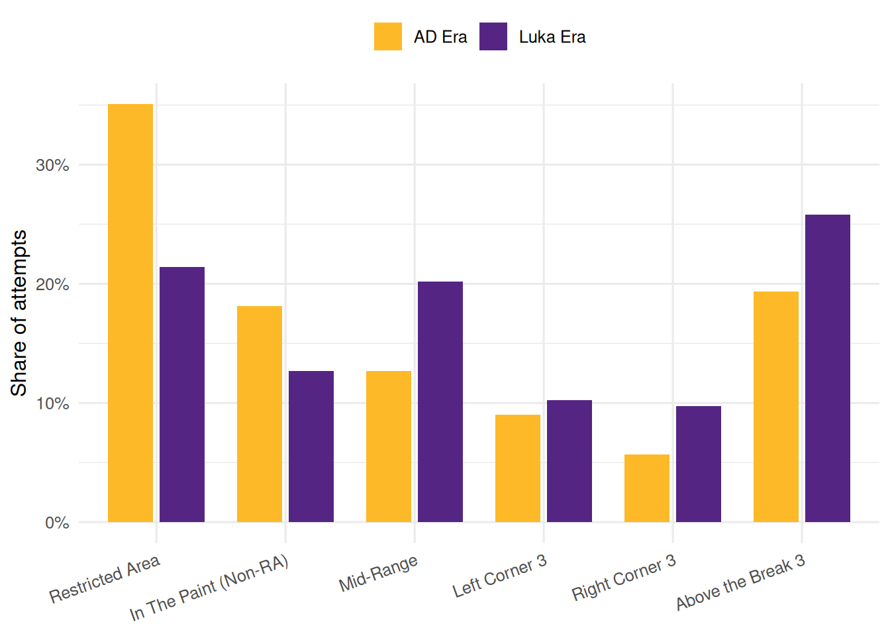
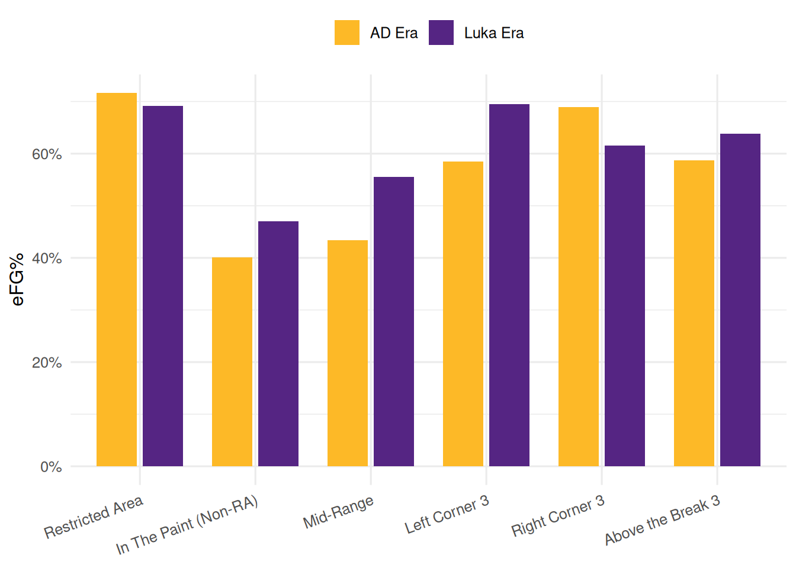
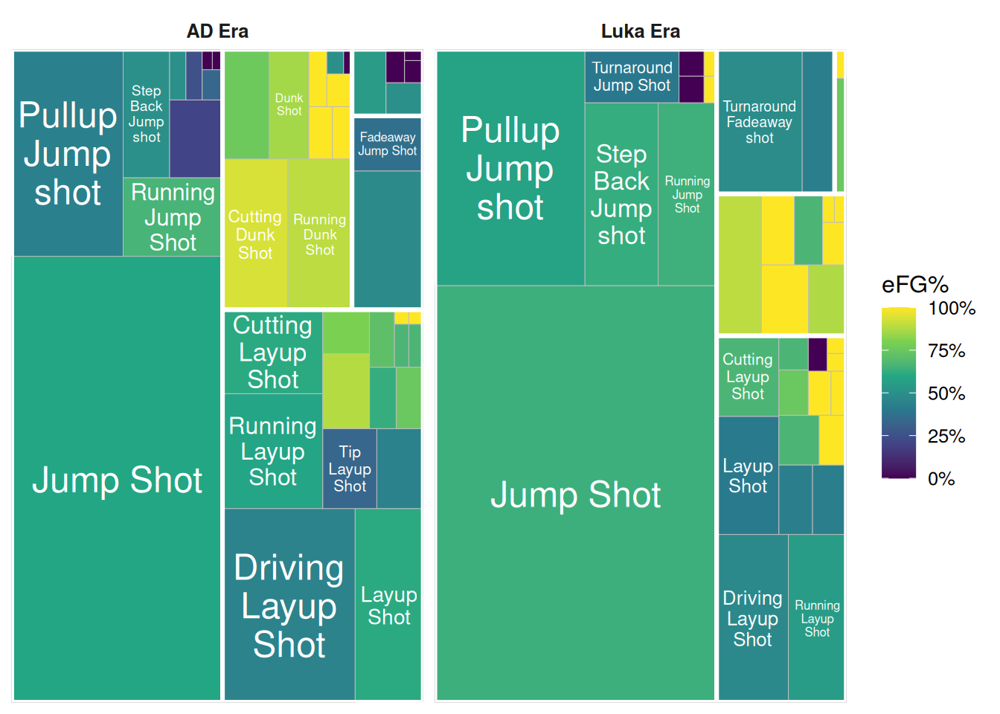

R code
library(dplyr)
library(tidyr)
library(ggplot2)
library(plotly)
library(shiny)
library(bslib)
library(treemapify)Last week’s Shiny app was functional — a sidebar, a dropdown and a single Plotly bar chart — but it read like one chart with controls, not a dashboard. This week we stay with the same Lakers Evolution story and close that design gap. Same data, same before/after question around the 1 February 2025 Luka trade, new layer of polish.
We will keep the bar chart from last week and add three more angles on the same story:
action_type strings nested inside families (Dunk, Layup, Fadeaway, Jump Shot) and eras, tile area = share of that era’s attempts, tile colour = eFG%, detail on hover only;eFG%, xeFG% and the eFG% − xeFG% differential — shown as headline value boxes that compare the Luka Era to the AD Era at a glance.Each visual is sketched as a static figure first, then picked up and dropped into the dashboard. The real teaching goal is the layout toolkit that shiny and bslib give us — page_sidebar(), card(), navset_card_tab(), value_box() and layout_columns(). The workflow for today is:
clean data -> save final product to app/ -> sketch each chart statically
-> learn layout patterns
-> assemble the dashboardOnly one file ever leaves this workbook — the single cleaned .rds the app reads.
We keep last week’s stack and add bslib for the layout components, tidyr for the wide-format era table the value boxes read from, and treemapify for the static tree-map sketch. The interactive tree map is built with plotly directly — no extra library needed.
R code
library(dplyr)
library(tidyr)
library(ggplot2)
library(plotly)
library(shiny)
library(bslib)
library(treemapify)Before we open the app, we add three numbers to the story. Each answers a different question — together, they let us tell shot-making apart from shot-selection.
| Metric | Question it answers |
|---|---|
| eFG% | Was the shooting actually effective? |
| xeFG% | Were the shots good ones to take? (shot quality) |
| eFG% − xeFG% | Did the player finish them? (shot-making) |
eFG% is standard field-goal percentage, but a made 3-pointer counts as 1.5 makes — so a 5/10 shooter who took all 3s lands at 75%, not 50%.
xeFG% is the eFG% an average shooter would produce given this player’s exact shot mix. High xeFG% = easy menu (dunks, layups, open 3s). Low xeFG% = hard menu (contested pull-ups, fadeaways).
The differential (eFG% − xeFG%) is shot-making stripped of shot-selection. Positive = finishing better than the shot difficulty predicts; negative = worse. Report it in percentage points (pp), not %.
eFG% — Effective Field Goal %
A made 3 is worth 50% more than a made 2, so eFG% credits it accordingly:
eFG% = (FGM + 0.5 × 3PM) / FGAIn our data we use a compact equivalent that uses shot_value (2 or 3) and shot_made_flag (0 or 1):
efg = sum(shot_made_flag * shot_value) / (2 * n())Worked example — a player takes 10 shots (4 RA at 3/4, 4 Mid-Range at 2/4, 2 Above-the-Break 3s at 1/2):
numerator = 3×2 + 2×2 + 1×3 = 13
denominator = 2 × 10 = 20
eFG% = 13 / 20 = 65%A perfect 2-point shooter tops out at 100%; a perfect 3-point shooter at 150%.
xeFG% — Expected eFG%
Two things set a shot’s difficulty: shot_zone_basic (where) and action_type (how). We compute xeFG% in two steps.
Step 1 — baseline per (zone × action_type). Over every shot in the dataset:
shot_baseline <- lakers_shots |>
group_by(shot_zone_basic, action_type) |>
summarise(xefg_baseline = sum(shot_made_flag * shot_value) / (2 * n()))One number per combination, e.g. Restricted Area + Dunk Shot ≈ 0.93; Mid-Range + Fadeaway ≈ 0.33.
Step 2 — join and average per player. Attach each shot’s baseline back onto the shot file, then average across the player’s attempts:
player_xefg = mean(xefg_baseline)Because every shot carries its own baseline, the mean is a shot-weighted average — shots the player takes often dominate the number.
Differential — eFG% − xeFG%
A simple subtraction. For the worked example with xeFG% = 50.4%:
differential = 65.0% − 50.4% = +14.6 ppWhat each extreme actually tells you:
And the pairs worth watching:
The data-prep step is the same habit as last week: do the heavy lifting here, and ship only what the app needs. The only file we will write into app/ is the finished product.
R code
luka_trade_date <- as.Date("2025-02-01")
zone_order <- c(
"Restricted Area",
"In The Paint (Non-RA)",
"Mid-Range",
"Left Corner 3",
"Right Corner 3",
"Above the Break 3"
)
lakers_shots <- readRDS("data/cleaned/lakers_shots.rds") |>
mutate(
game_date = as.Date(game_date),
era = factor(
if_else(game_date < luka_trade_date, "AD Era", "Luka Era"),
levels = c("AD Era", "Luka Era")
)
) |>
filter(shot_zone_basic %in% zone_order) |>
mutate(shot_zone_basic = factor(shot_zone_basic, levels = zone_order))
shot_baseline <- lakers_shots |>
group_by(shot_zone_basic, action_type) |>
summarise(xefg_baseline = sum(shot_made_flag * shot_value) / (2 * n()),
.groups = "drop")
lakers_shots <- lakers_shots |>
left_join(shot_baseline, by = c("shot_zone_basic", "action_type"))shot_baseline is the xeFG% an average shooter would produce for each (zone × action_type) combination, computed once from every shot in the dataset. Joining it back onto lakers_shots adds an xefg_baseline column to every row, so the app never has to recompute the baseline.
Save the finished table into app/.
R code
dir.create("app", showWarnings = FALSE)
saveRDS(lakers_shots, "app/lakers_shots.rds")That is the only file the app will read this week. Your project should now look like this:
app/
app.R
lakers_shots.rds <- only this file moves to the app folder
data/
cleaned/
lakers_shots.rds <- the original cleaned archive stays hereEvery chart the dashboard shows is going to be a chart we have already built and inspected on its own. Four sketches, four charts — two zone views, two action-type views, plus the per-era metric table.
Reuse the chart from last week. share is the proportion of Rui’s attempts that came from each zone within each era.
R code
lakers_colours <- c("AD Era" = "#FDB927", "Luka Era" = "#552583")
rui_by_zone <- lakers_shots |>
filter(player_name == "Rui Hachimura") |>
count(era, shot_zone_basic) |>
group_by(era) |>
mutate(share = n / sum(n)) |>
ungroup()
ggplot(rui_by_zone, aes(x = shot_zone_basic, y = share, fill = era)) +
geom_col(position = position_dodge(width = 0.8), width = 0.7) +
scale_y_continuous(labels = scales::percent_format(accuracy = 1)) +
scale_fill_manual(values = lakers_colours) +
labs(x = NULL, y = "Share of attempts", fill = NULL) +
theme_minimal(base_size = 12) +
theme(legend.position = "top",
axis.text.x = element_text(angle = 20, hjust = 1))
Sketch 1 answers where did the shots come from?. The obvious follow-up is how well did they go in?. Notice the code below is almost identical to Sketch 1 — same zones on the x-axis, same era split, same Lakers colours — but the numerator changes from share of attempts to eFG% per zone. That is the teaching point: once you have built one chart, a close sibling is often ten lines away.
R code
rui_zone_eff <- lakers_shots |>
filter(player_name == "Rui Hachimura") |>
group_by(era, shot_zone_basic) |>
summarise(efg = sum(shot_made_flag * shot_value) / (2 * n()),
attempts = n(),
.groups = "drop")
ggplot(rui_zone_eff, aes(x = shot_zone_basic, y = efg, fill = era)) +
geom_col(position = position_dodge(width = 0.8), width = 0.7) +
scale_y_continuous(labels = scales::percent_format(accuracy = 1)) +
scale_fill_manual(values = lakers_colours) +
labs(x = NULL, y = "eFG%", fill = NULL) +
theme_minimal(base_size = 12) +
theme(legend.position = "top",
axis.text.x = element_text(angle = 20, hjust = 1))
Paired together, the two charts tell the classic volume + efficiency story:
That pairing is what makes Pattern B (a tabbed card) the natural home for these two later on. Keep the attempts column on rui_zone_eff; we will use it for the Plotly tooltip inside the app.
shot_zone_basic told us where; action_type tells us how. The catch: NBA shot data carries 30+ distinct action_type strings — “Driving Reverse Layup”, “Pullup Jump Shot”, “Alley Oop Dunk”, “Running Fadeaway Shot”… A bar chart across that many categories is unreadable. A tree map copes because unimportant categories shrink to thin slivers automatically; the reader’s eye lands on the big tiles first.
We will keep the original action_type strings as the tile labels — they carry information — and only use the family as the subgroup hierarchy above them. Four families, plus an Other bucket for the stragglers:
Step 1 — the family function. If a string matches more than one keyword (e.g. “Fadeaway Jump Shot” contains both Fadeaway and Jump), precedence is Dunk → Layup → Fadeaway → Jump. The first match wins.
R code
action_family_of <- function(x) {
dplyr::case_when(
grepl("Dunk", x, ignore.case = TRUE) ~ "Dunk",
grepl("Layup", x, ignore.case = TRUE) ~ "Layup",
grepl("Fadeaway", x, ignore.case = TRUE) ~ "Fadeaway",
grepl("Jump", x, ignore.case = TRUE) ~ "Jump Shot",
TRUE ~ "Other"
)
}Step 2 — the per-era, per-action table. One row per (era × action_family × action_type) combination.
R code
rui_family <- lakers_shots |>
filter(player_name == "Rui Hachimura") |>
mutate(action_family = action_family_of(action_type)) |>
group_by(era, action_family, action_type) |>
summarise(attempts = n(),
efg = sum(shot_made_flag * shot_value) / (2 * n()),
.groups = "drop") |>
group_by(era) |>
mutate(proportion = attempts / sum(attempts)) |>
ungroup()
rui_family# A tibble: 78 × 6
era action_family action_type attempts efg proportion
<fct> <chr> <chr> <int> <dbl> <dbl>
1 AD Era Dunk Alley Oop Dunk Shot 5 1 0.00383
2 AD Era Dunk Cutting Dunk Shot 48 0.938 0.0368
3 AD Era Dunk Driving Dunk Shot 25 0.76 0.0191
4 AD Era Dunk Driving Reverse Dunk Shot 2 0.5 0.00153
5 AD Era Dunk Dunk Shot 21 0.857 0.0161
6 AD Era Dunk Putback Dunk Shot 5 1 0.00383
7 AD Era Dunk Reverse Dunk Shot 6 1 0.00459
8 AD Era Dunk Running Alley Oop Dunk Shot 4 1 0.00306
9 AD Era Dunk Running Dunk Shot 47 0.894 0.0360
10 AD Era Dunk Running Reverse Dunk Shot 1 0 0.000766
# ℹ 68 more rowsEach row carries attempts, proportion and efg. The tree map sizes tiles by proportion (share within each era) so the two era sub-trees stay comparable even when one has fewer total shots, and colours tiles by efg.
Step 3 — the static sketch. treemapify gives ggplot a geom_treemap() we can drop straight onto rui_family. Facet per era so the two halves stay visually separated, and keep the scale-fill gradient on efg.
R code
ggplot(rui_family,
aes(area = proportion,
fill = efg,
label = action_type,
subgroup = action_family)) +
geom_treemap() +
geom_treemap_subgroup_border(colour = "white", size = 3) +
geom_treemap_text(colour = "white", place = "centre",
grow = FALSE, reflow = TRUE, min.size = 6) +
scale_fill_viridis_c(labels = scales::percent_format(accuracy = 1),
limits = c(0, 1), name = "eFG%") +
facet_wrap(~ era) +
theme_minimal(base_size = 12) +
theme(strip.text = element_text(face = "bold"))
The static sketch already tells the story: which families dominate each era, and which individual action_types inside them are getting finished. The interactive plotly version in the app will add hover tooltips and drill-down, but the shape of the chart is the one you see here.
action_type in NBA shot data has a long tail: 30+ distinct strings, most attempted only a handful of times per player. Two common reflexes both fail:
A tree map sidesteps both: tile area encodes share of attempts — common shots dominate, rare ones shrink to slivers — and a subgroup hierarchy (family → action_type) lets the eye land on a family first. The static sketch above nails the layout; the interactive plotly version in the app adds hover tooltips with attempts, eFG% and the change vs the other era.
rui_family is the only structure the app needs; the plotly code lives with the rest of the dashboard in the next section.
The three metrics become a story when we compute them once per era and compare. That is the shape the value boxes will end up showing: the Luka Era number as the headline, with a short “▲ +4.1 pp vs AD Era” line underneath. Build the table first.
R code
rui_era_metrics <- lakers_shots |>
filter(player_name == "Rui Hachimura") |>
group_by(era) |>
summarise(attempts = n(),
efg = sum(shot_made_flag * shot_value) / (2 * n()),
xefg = mean(xefg_baseline),
diff = efg - xefg,
.groups = "drop")
rui_era_metrics# A tibble: 2 × 5
era attempts efg xefg diff
<fct> <int> <dbl> <dbl> <dbl>
1 AD Era 1306 0.585 0.604 -0.0197
2 Luka Era 803 0.615 0.581 0.0339Three columns matter downstream:
efg — the number the first value box will show.xefg — the second value box; reads “shot quality”.diff — the third value box; reads “shot-making above/below expectation”.The delta shown under each value box is just the Luka row minus the AD row, expressed in percentage points. We will compute it in the app with a short helper. Having the era table in front of you now makes it obvious what those helpers need to produce.
Four charts, one pattern in common: each was built, inspected and coloured in the workbook before touching Shiny. If any of them looked wrong here, it would be obvious here — not three cards deep in an app.
We do not build the dashboard in one go. We start from last week’s app and add one piece at a time. After each step the app still runs — that way, if something breaks, the cause is the change you just made, not six things bundled together.
Each step below shows only the UI change (the server pieces each step needs appear in the full listing at the end). Drop each step’s code into your own app/app.R and run it before moving on.
Last week you had a fluidPage() with a sidebar and one Plotly bar chart. Strip it to its bones:
Step 0
ui <- fluidPage(
titlePanel("Lakers Evolution Dashboard"),
sidebarLayout(
sidebarPanel(
selectInput("player", "Player",
choices = player_choices, selected = "Rui Hachimura")
),
mainPanel(
plotlyOutput("zone_bars", height = "440px")
)
)
)Sketches 1 and 2 are two views of the same question. navset_card_tab() lets the reader flip between them inside a single card.
Step 2
navset_card_tab(
title = "Shot Selection by Zone",
full_screen = TRUE,
nav_panel("Volume", plotlyOutput("zone_bars", height = "360px")),
nav_panel("Efficiency", plotlyOutput("zone_eff", height = "360px"))
)full_screen = TRUE adds an expand button. Both outputs still react to the same input$player; the server has no idea the tabs exist.
value_box() is a coloured card built around one big number. layout_columns() places three in a row. Anything after value = ... renders below the number — which is where we slip in the delta line.
Step 3
layout_columns(
col_widths = c(4, 4, 4),
value_box(title = "eFG%",
value = textOutput("efg_value"),
textOutput("efg_delta"),
showcase = bsicons::bs_icon("bullseye"),
theme = "primary"),
value_box(title = "xeFG% (shot quality)",
value = textOutput("xefg_value"),
textOutput("xefg_delta"),
showcase = bsicons::bs_icon("map"),
theme = "secondary"),
value_box(title = "eFG% − xeFG% (shot-making)",
value = textOutput("diff_value"),
textOutput("diff_delta"),
showcase = bsicons::bs_icon("graph-up"),
theme = "success")
)Put this row above the zone card inside page_sidebar(). The server side needs one reactive (the per-era metric table) and six text outputs (three values + three deltas).
Wrap the zone tabbed card and a new single-chart card in layout_columns(col_widths = c(6, 6)) so they share a row.
Step 4
layout_columns(
col_widths = c(6, 6),
navset_card_tab(
title = "Shot Selection by Zone",
full_screen = TRUE,
nav_panel("Volume", plotlyOutput("zone_bars", height = "320px")),
nav_panel("Efficiency", plotlyOutput("zone_eff", height = "320px"))
),
card(
card_header("Action Families — Efficiency"),
full_screen = TRUE,
tags$small(style = "color: #666; padding: 0 0.75rem;",
"Tile size = share of attempts within each era, ",
"tile colour = eFG%. Hover for details."),
plotlyOutput("type_tree_efficiency", height = "320px")
)
)When the column widths add up to 12, Bootstrap places them side by side.
A single bs_theme() propagates the Lakers palette to every component. Narrow the sidebar so the two cards get room, and shrink the value-box typography so the headline row reads as a summary rather than the hero.
Step 5
lakers_theme <- bs_theme(
version = 5,
primary = "#552583",
secondary = "#FDB927",
success = "#2E7D32",
base_font = font_google("Inter")
)
vb_title <- function(x) tags$span(style = "font-size: 0.8rem;", x)
vb_value <- function(x) tags$span(style = "font-size: 1.3rem; font-weight: 600;", x)
vb_delta <- function(x) tags$span(style = "font-size: 0.75rem;", x)
vb_icon <- function(name) tags$span(style = "font-size: 0.4rem;",
bsicons::bs_icon(name))
# in page_sidebar: theme = lakers_theme, sidebar = sidebar(width = 200, ...)
# in value_box: wrap title/value/delta/showcase with the helpers aboveSet the theme once, pass it via page_sidebar(theme = lakers_theme), and every value_box(theme = "primary"), active tab and button matches — no tags$style() hacks required.
app.REvery step above collapses into one file. Copy this into app/app.R:
app/app.R
library(shiny)
library(plotly)
library(dplyr)
library(tidyr)
library(ggplot2)
library(bslib)
lakers_colours <- c("AD Era" = "#FDB927", "Luka Era" = "#552583")
luka_trade_date <- as.Date("2025-02-01")
lakers_shots <- readRDS("lakers_shots.rds")
player_choices <- sort(unique(lakers_shots$player_name))
action_family_of <- function(x) {
case_when(
grepl("Dunk", x, ignore.case = TRUE) ~ "Dunk",
grepl("Layup", x, ignore.case = TRUE) ~ "Layup",
grepl("Fadeaway", x, ignore.case = TRUE) ~ "Fadeaway",
grepl("Jump", x, ignore.case = TRUE) ~ "Jump Shot",
TRUE ~ "Other"
)
}
lakers_theme <- bs_theme(
version = 5,
primary = "#552583",
secondary = "#FDB927",
success = "#2E7D32",
base_font = font_google("Inter")
)
vb_title <- function(x) tags$span(style = "font-size: 0.8rem;", x)
vb_value <- function(x) tags$span(style = "font-size: 1.3rem; font-weight: 600;", x)
vb_delta <- function(x) tags$span(style = "font-size: 0.75rem;", x)
vb_icon <- function(name) tags$span(style = "font-size: 0.4rem;",
bsicons::bs_icon(name))
ui <- page_sidebar(
title = "Lakers Evolution Dashboard",
theme = lakers_theme,
sidebar = sidebar(
width = 200,
selectInput("player", "Player",
choices = player_choices,
selected = "Rui Hachimura"),
p("Value boxes compare the Luka Era to the AD Era.
The left card splits shots by court zone.
The right card is an interactive tree map — hover any tile
for attempts, share, eFG% and the change vs the other era.")
),
# --- Pattern C: headline numbers with era deltas (slim) ---
layout_columns(
col_widths = c(4, 4, 4),
value_box(title = vb_title("eFG% (efficiency)"),
value = vb_value(textOutput("efg_value", inline = TRUE)),
vb_delta(textOutput("efg_delta", inline = TRUE)),
showcase = vb_icon("bullseye"),
theme = "primary"),
value_box(title = vb_title("xeFG% (shot quality)"),
value = vb_value(textOutput("xefg_value", inline = TRUE)),
vb_delta(textOutput("xefg_delta", inline = TRUE)),
showcase = vb_icon("map"),
theme = "secondary"),
value_box(title = vb_title("eFG% − xeFG% (shot-making)"),
value = vb_value(textOutput("diff_value", inline = TRUE)),
vb_delta(textOutput("diff_delta", inline = TRUE)),
showcase = vb_icon("graph-up"),
theme = "success")
),
# --- Pattern D: two cards side by side ---
layout_columns(
col_widths = c(6, 6),
# Pattern B: zone — Volume + Efficiency in a tabbed card
navset_card_tab(
title = "Shot Selection by Zone",
full_screen = TRUE,
nav_panel("Volume", plotlyOutput("zone_bars", height = "320px")),
nav_panel("Efficiency", plotlyOutput("zone_eff", height = "320px"))
),
# Action families — single-chart card, tree map of original action_types
card(
card_header("Action Families — Efficiency"),
full_screen = TRUE,
tags$small(style = "color: #666; padding: 0 0.75rem;",
"Tile size = share of attempts within each era, ",
"tile colour = eFG%. Hover for details."),
plotlyOutput("type_tree_efficiency", height = "320px")
)
)
)
server <- function(input, output, session) {
player_shots <- reactive({
lakers_shots |> filter(player_name == input$player)
})
# --- Era metrics (Sketch 4) ---
era_metrics <- reactive({
player_shots() |>
group_by(era) |>
summarise(efg = sum(shot_made_flag * shot_value) / (2 * n()),
xefg = mean(xefg_baseline),
diff = efg - xefg,
.groups = "drop") |>
pivot_wider(names_from = era,
values_from = c(efg, xefg, diff))
})
fmt_pct <- function(x) paste0(round(x * 100, 1), "%")
fmt_pp <- function(x) paste0(if (x >= 0) "+" else "",
round(x * 100, 1), " pp")
fmt_delta <- function(luka, ad) {
d <- luka - ad
arrow <- if (d > 0) "▲" else if (d < 0) "▼" else "—"
paste0(arrow, " ", fmt_pp(d), " vs AD (", fmt_pct(ad), ")")
}
# Headline values = Luka Era
output$efg_value <- renderText({ fmt_pct(era_metrics()$`efg_Luka Era`) })
output$xefg_value <- renderText({ fmt_pct(era_metrics()$`xefg_Luka Era`) })
output$diff_value <- renderText({ fmt_pp(era_metrics()$`diff_Luka Era`) })
# Delta lines = Luka − AD
output$efg_delta <- renderText({
m <- era_metrics(); fmt_delta(m$`efg_Luka Era`, m$`efg_AD Era`)
})
output$xefg_delta <- renderText({
m <- era_metrics(); fmt_delta(m$`xefg_Luka Era`, m$`xefg_AD Era`)
})
output$diff_delta <- renderText({
m <- era_metrics(); fmt_delta(m$`diff_Luka Era`, m$`diff_AD Era`)
})
# --- Volume: share of attempts per zone (Sketch 1) ---
output$zone_bars <- renderPlotly({
plot_data <- player_shots() |>
count(era, shot_zone_basic) |>
group_by(era) |>
mutate(share = n / sum(n)) |>
ungroup()
gg <- ggplot(plot_data,
aes(x = shot_zone_basic, y = share, fill = era,
text = paste0(era, "<br>", shot_zone_basic, "<br>",
"Attempts: ", n, "<br>",
"Share: ", round(share * 100, 1), "%"))) +
geom_col(position = position_dodge(width = 0.8), width = 0.7) +
scale_y_continuous(labels = scales::percent_format(accuracy = 1)) +
scale_fill_manual(values = lakers_colours) +
labs(x = NULL, y = "Share of attempts", fill = NULL) +
theme_minimal(base_size = 11) +
theme(legend.position = "top",
axis.text.x = element_text(angle = 20, hjust = 1))
ggplotly(gg, tooltip = "text")
})
# --- Efficiency: eFG% per zone (Sketch 2) ---
output$zone_eff <- renderPlotly({
plot_data <- player_shots() |>
group_by(era, shot_zone_basic) |>
summarise(efg = sum(shot_made_flag * shot_value) / (2 * n()),
attempts = n(),
.groups = "drop")
gg <- ggplot(plot_data,
aes(x = shot_zone_basic, y = efg, fill = era,
text = paste0(era, "<br>", shot_zone_basic, "<br>",
"Attempts: ", attempts, "<br>",
"eFG%: ", round(efg * 100, 1), "%"))) +
geom_col(position = position_dodge(width = 0.8), width = 0.7) +
scale_y_continuous(labels = scales::percent_format(accuracy = 1)) +
scale_fill_manual(values = lakers_colours) +
labs(x = NULL, y = "eFG%", fill = NULL) +
theme_minimal(base_size = 11) +
theme(legend.position = "top",
axis.text.x = element_text(angle = 20, hjust = 1))
ggplotly(gg, tooltip = "text")
})
# --- Action-family long table, one row per (era × family × action_type).
# proportion is the share of attempts *within each era*, so the two
# era sub-trees stay comparable even when one has fewer total shots. ---
family_data <- reactive({
player_shots() |>
mutate(action_family = action_family_of(action_type)) |>
group_by(era, action_family, action_type) |>
summarise(attempts = n(),
efg = sum(shot_made_flag * shot_value) / (2 * n()),
.groups = "drop") |>
group_by(era) |>
mutate(proportion = attempts / sum(attempts)) |>
ungroup()
})
# --- Build one treemap-node table per era: families at the root,
# original action_types as leaves. The era label is handled as a
# subplot title (not as a tile) so the drill-down starts at family. ---
era_tree_nodes <- reactive({
d <- family_data()
wide <- d |>
mutate(era_key = if_else(era == "AD Era", "ad", "luka")) |>
select(-era) |>
pivot_wider(id_cols = c(action_family, action_type),
names_from = era_key,
values_from = c(attempts, proportion, efg))
enriched <- d |>
left_join(wide, by = c("action_family", "action_type")) |>
mutate(
other_era = if_else(era == "AD Era", "Luka Era", "AD Era"),
proportion_other = if_else(era == "AD Era",
coalesce(proportion_luka, 0),
coalesce(proportion_ad, 0)),
efg_other = if_else(era == "AD Era", efg_luka, efg_ad),
proportion_delta = proportion - proportion_other,
efg_delta = efg - efg_other
)
sign_pp <- function(x) paste0(if_else(x >= 0, "+", ""),
round(x * 100, 1), " pp")
build_one <- function(era_name) {
e <- enriched |> filter(era == era_name)
if (nrow(e) == 0) return(NULL)
leaves <- e |>
transmute(
id = paste(action_family, action_type, sep = "/"),
label = action_type,
parent = action_family,
value = proportion,
efg_val = efg,
hover = paste0(
"<b>", action_type, "</b><br>",
"Attempts: ", attempts, "<br>",
"Share: ", round(proportion * 100, 1), "%",
" (", sign_pp(proportion_delta), " vs other era)<br>",
"eFG%: ", round(efg * 100, 1), "%",
if_else(!is.na(efg_delta),
paste0(" (", sign_pp(efg_delta), " vs other era)"),
"")
)
)
families <- e |>
group_by(action_family) |>
summarise(attempts_total = sum(attempts),
proportion_total = sum(proportion),
efg_val = weighted.mean(efg, attempts,
na.rm = TRUE),
.groups = "drop") |>
transmute(
id = action_family,
label = action_family,
parent = "",
value = proportion_total,
efg_val = efg_val,
hover = paste0("<b>", action_family, "</b><br>",
"Attempts: ", attempts_total, "<br>",
"Share: ", round(proportion_total * 100, 1), "%<br>",
"eFG%: ", round(efg_val * 100, 1), "%")
)
bind_rows(families, leaves)
}
list(ad = build_one("AD Era"), luka = build_one("Luka Era"))
})
# --- Tree map: Efficiency.
# Two traces (AD Era, Luka Era) side by side with era as the title;
# tile area = share of attempts within that era;
# tile colour = eFG% (shared gradient); default labels show on tiles
# big enough to hold them, full detail is on hover. ---
output$type_tree_efficiency <- renderPlotly({
trees <- era_tree_nodes()
validate(need(!is.null(trees$ad) || !is.null(trees$luka),
"No shots to show for this player."))
efg_marker <- function(efg_vals) list(
colors = efg_vals,
colorscale = "Viridis",
cmin = 0,
cmax = 1,
showscale = TRUE,
colorbar = list(title = list(text = "eFG%"),
tickformat = ".0%")
)
add_era_trace <- function(p, nodes, column) {
if (is.null(nodes)) return(p)
add_trace(p,
type = "treemap",
ids = nodes$id,
labels = nodes$label,
parents = nodes$parent,
values = nodes$value,
branchvalues = "total",
textinfo = "label",
text = nodes$hover,
hovertemplate = "%{text}<extra></extra>",
marker = efg_marker(nodes$efg_val),
domain = list(column = column)
)
}
annotations <- list(
list(text = "<b>AD Era</b>",
x = 0.22, y = 1.0, xref = "paper", yref = "paper",
xanchor = "center", yanchor = "bottom",
showarrow = FALSE, font = list(size = 13)),
list(text = "<b>Luka Era</b>",
x = 0.78, y = 1.0, xref = "paper", yref = "paper",
xanchor = "center", yanchor = "bottom",
showarrow = FALSE, font = list(size = 13))
)
plot_ly() |>
add_era_trace(trees$ad, 0) |>
add_era_trace(trees$luka, 1) |>
layout(
grid = list(columns = 2, rows = 1),
annotations = annotations,
margin = list(t = 60, l = 5, r = 5, b = 5)
)
})
}
shinyApp(ui = ui, server = server)Run it.
R Console
shiny::runApp("app")Each server output maps back to a sketch: zone_bars → Sketch 1, zone_eff → Sketch 2, type_tree_efficiency → Sketch 3 (enriched with a cross-era join so the hover can compare), and the six text outputs (three values + three deltas) all read from the era table in Sketch 4.
The last mile of a dashboard is not about the charts — it is the finishing. A short checklist to run through before calling it done:
"Volume" and "Efficiency" are doing caption work here — short, specific, and they tell the user what is different between the two views.bs_theme() — the value-box accents."eFG% − xeFG% (shot-making)" is long, but it tells the user what the number means. The delta line below it does the comparison work without a legend.sidebar(width = 200) frees horizontal space for the charts — enough for one dropdown and a short caption, no wider.full_screen = TRUE for any card a user might want to stare at.height = "320px" across the two side-by-side cards keeps the page rhythmic — each card is the same size, and neither one dominates.tags$span(style = "font-size: ...") to keep the eye on the charts below.Four ideas underneath the whole workbook are worth flagging:
app/lakers_shots.rds, with every column the app needs. The raw cleaning code stays in the workbook.| Problem | Solution |
|---|---|
page_sidebar() not found |
Install and load bslib |
bsicons not found |
install.packages("bsicons") once, then load it |
Value boxes show NaN% |
The selected player has no shots in one era — add req(all(c("AD Era", "Luka Era") %in% era_metrics()$era)) or guard against missing eras in the helpers |
Delta says NA pp |
The pivot-wider column names include a space ("efg_Luka Era") — wrap them in backticks when you index |
| Tree map is empty for a player with no shots | validate(need(...)) fires on empty data — not a bug, the player genuinely has zero attempts in the current filter |
| Big tiles show a label but small tiles don’t | That is the plotly treemap default — labels only render where they fit. Hover any tile for the full action_type, attempts, share and eFG% |
| Hover tooltip looks cluttered | Edit the hover string in tree_nodes() — the lines come from a single paste0() so each row is easy to drop or reorder |
| Clicking a tile “zooms in” | That is the plotly treemap default — the top-left corner shows a breadcrumb; click it to zoom out |
| One era sub-tree is empty | The player took no shots in that era — common for mid-season arrivals or departures |
| Tree-map tiles look the same size in both eras | Tile area = share of attempts within each era, so a player with 20 AD shots and 200 Luka shots still fills both halves — the delta vs the other era is in the hover |
| Volume and Efficiency tabs look identical | Check y = share in zone_bars and y = efg in zone_eff — easy to leave both pointing at the same column when copy-pasting |
| Card or value-box colours look generic | Check bs_theme() is passed via page_sidebar(theme = ...) and that themes are named ("primary", "secondary", "success") |
| Value boxes feel too loud at the top of the page | Wrap the title, value and delta content in tags$span(style = "font-size: ...") — the Polish section of the workbook shows the pattern |
| Sidebar is too wide | Set sidebar(width = 200) (or smaller) — narrow sidebars give the side-by-side cards room |
| Tabs inside a card look like plain tabs | Use navset_card_tab(), not tabsetPanel() — the former is the carded variant |
You are almost there! ⚙️
Today you:
page_sidebar(), card(), navset_card_tab(), value_box() and layout_columns();Next week we shift from building the dashboard to sharing it — deployment, GitHub Pages and the final portfolio presentation.